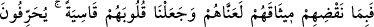
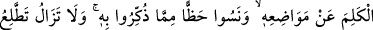
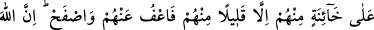
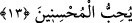

Ölünün damarına neşter vurmak gibidir
“Eğer namazı dosdoğru kılarsanız” âyetinin tahkîkine gelince, namazı dosdoğru
kılmak demek, onu Hakk’a mîrac hâline getirmektir. Mîsak (kâlû belâ) gününde
müşahede ettiğin gibi Hakk’ı müşâhede edene kadar namazın derecelerinde mîrâcı
(yükselmeyi) devam ettirmektir.
Namazın dereceleri dörttür: Bunlar, yüceler yücesinden ve âlemlerin Rabbi’nin
civârından indiğin aşağıların aşağısı olan kalıp (beden) âleminin derekelerine uygun
olarak kıyâm, rükû, sücûd ve teşehhüddür.
Bu derekeler insan bedeninin kendisinden yaratıldığı dört unsurdur. Bu dört unsurdan
doğan şeyler de dört kısma ayrılır. Onlardan her kısmın seni, Hakk’ı müşâhededen
perdeleyen bir zulmeti ve özelliği vardır. Bunlar: Cemadlık, nebatlık, hayvanlık ve
insanlıktır. Cansız varlıkların husûsiyeti teşehhüddür. Bitkilerin özelliği secdedir.
Hayvanların özelliği rükûdur. İnsanların özelliği ise kıyamdır.
Kıyam, senin insanî vasıfların perdelerinden kurtulmana işaret eder. Bu perdelerin en
büyüğü kibirdir. Kibir de ateşin özelliklerindendir. Rükû, hayvanî vasıfların
perdelerinden kurtulmana işaret eder. O vasıfların en büyüğü şehvettir. Şehvet de
hevânın özelliklerindendir. Secde, senin nebâtî huyların perdelerinden kurtulmana işaret
eder ki o huyların en büyüğü bir şeyi elde etme ve artırmaya olan hırstır. Bu da suyun
özelliklerindendir. Teşehhüd, senin cansız varlıkların huylarının perdelerinden
kurtulmana işâret eder ki o perdelerin en büyüğü donukluktur. Bu da toprağın
özelliklerindendir. İnsanlık sıfatlarının geri kalanları da bu dört sıfattan neş’et eder. Sen
bu derekelerden ve perdelerden kurtulup da bu dört yolla Âlemlerin Rabbi’nin civârına
ve kurbiyetine döndüğün zaman Peygamber (s.a.v.)’in “Allah’ı görüyormuşçasına
ibâdet et.”[284] hadîsinde buyurduğu gibi namazını Allah’a münâcât ve müşâhede ile
kılmış olursun. Bu bilgiler, et-Te’vîlâtü’n-Necmiyye’den alınmıştır.
13- Sözlerini bozmaları sebebiyle onları lânetledik ve kalplerini katılaştırdık.
Onlar kelimelerin yerlerini değiştirirler (kitaplarını tahrif ederler). Kendilerine
öğretilen şeyin (Tevrât’ın) önemli bir bölümünü de unuttular. İçlerinden pek azı
hâriç, dâima onlardan hâinlik görürsün. Yine de sen onları affet ve aldırma.
Şüphesiz Allah iyilik edenleri sever.